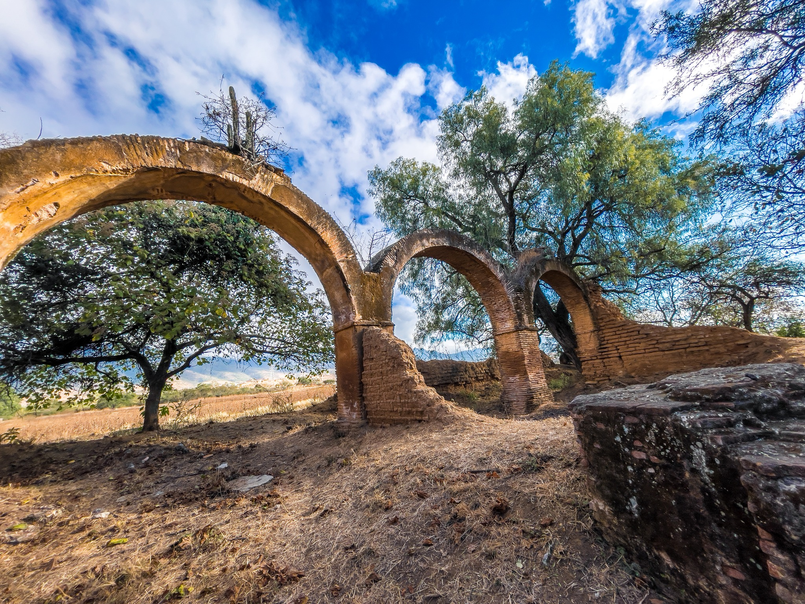
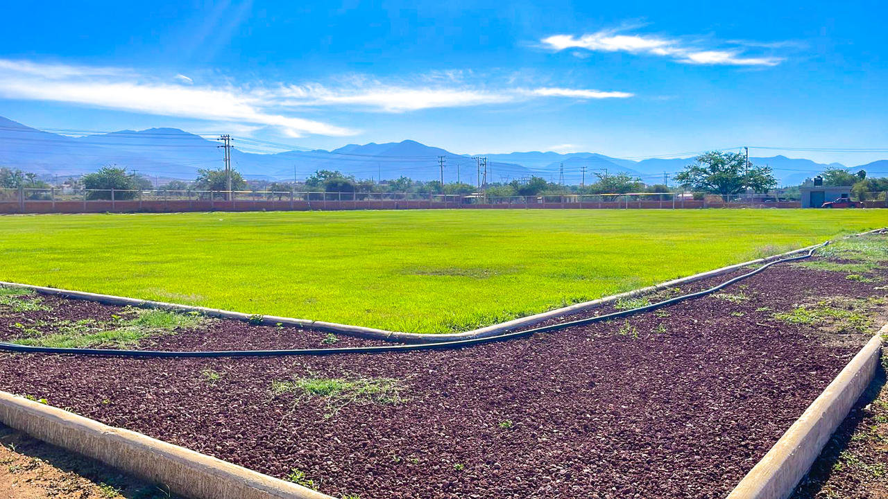
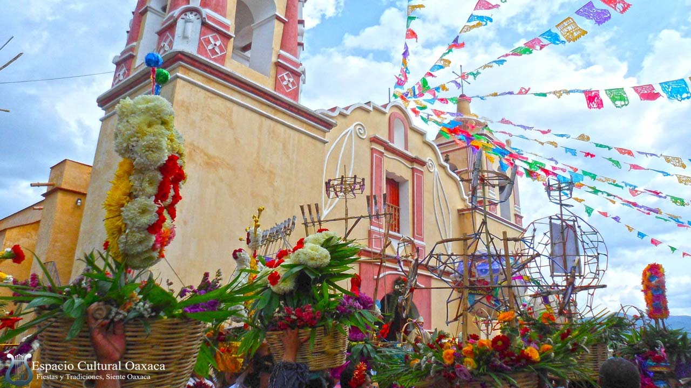
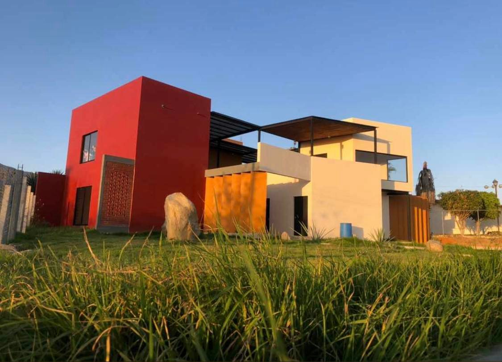
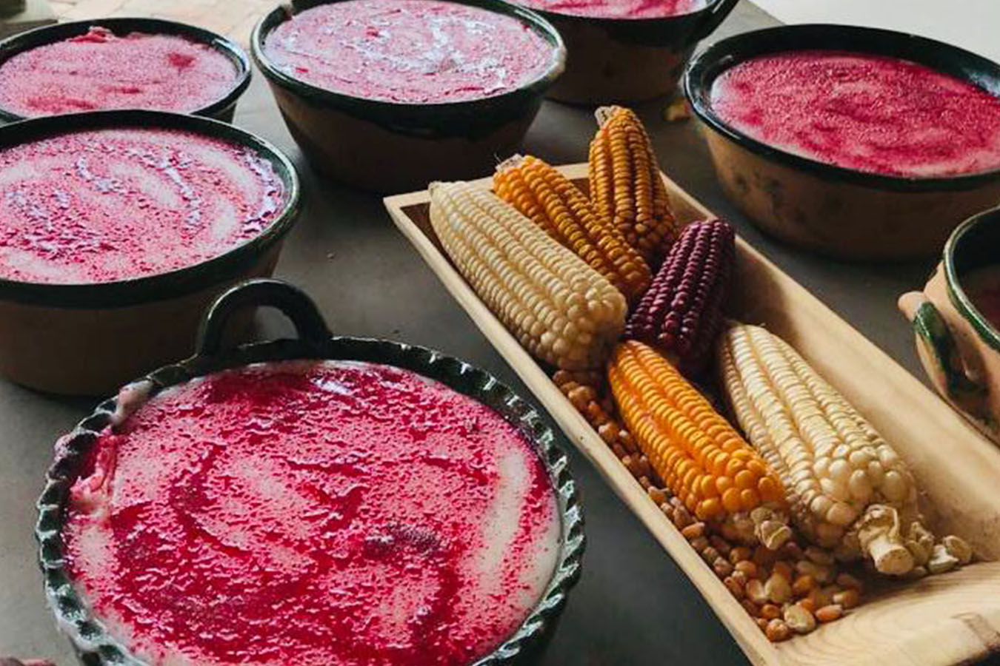
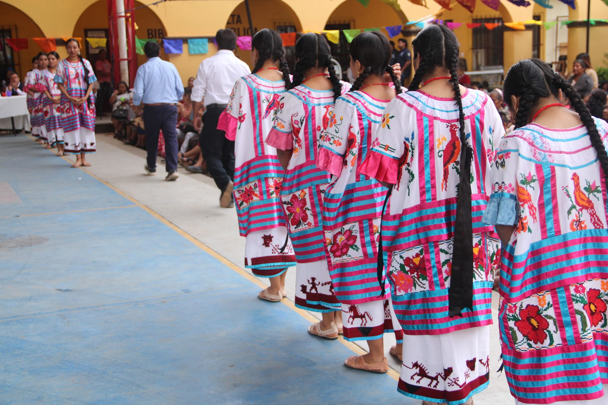
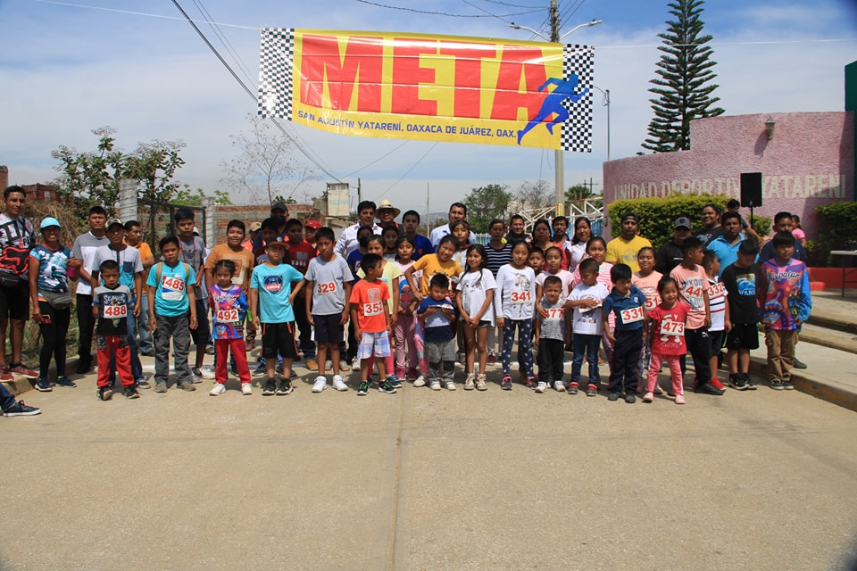
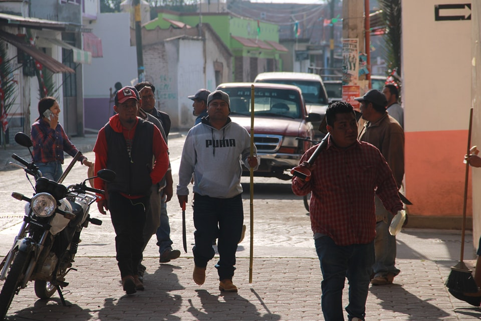
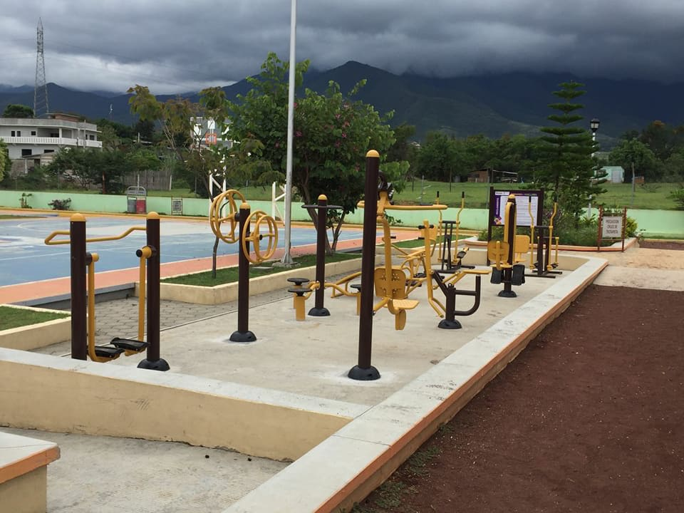
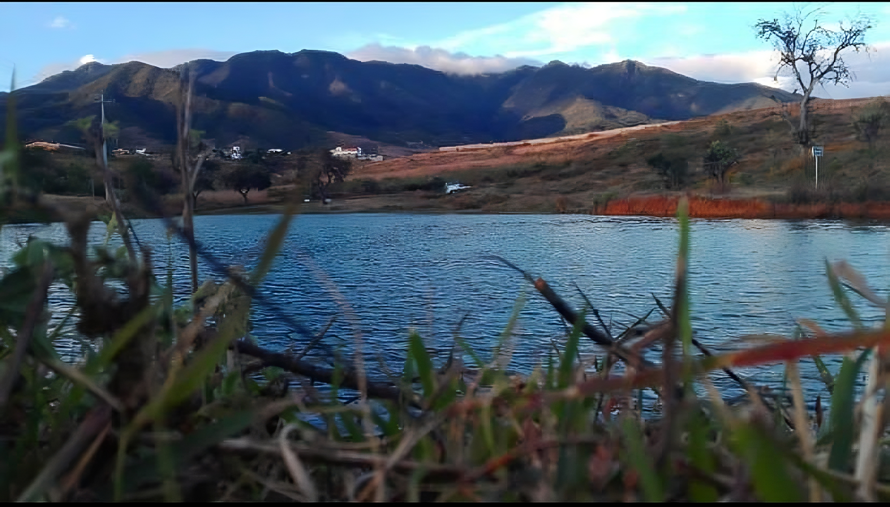

Galería

Arcos de la ex-hacienda de Dolores

Polideportivo Yatareni

Fiesta patronal de San Agustín Obispo

Casa de la cultura de Yatareni

Tradicional Nicuatole

Bailes folkloricos

Fomentacion del deporte

Tequios realizados

Unidad deportiva Yatareni

Presa de la poblacion